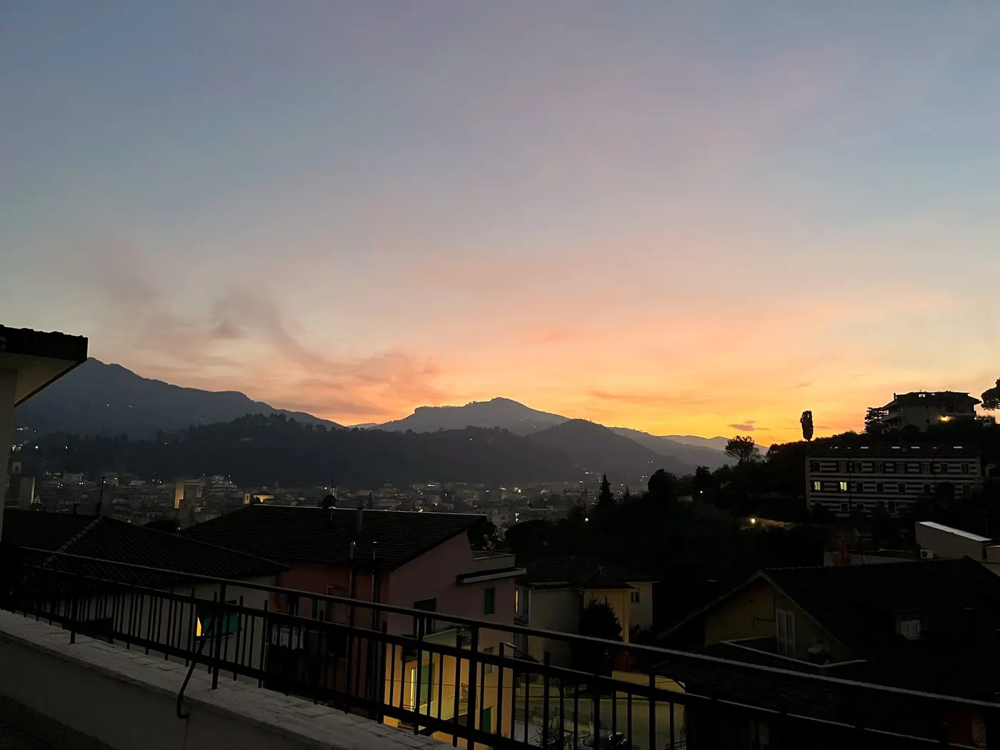

Ascoli Piceno · Marken · Italien
Drei Tage in
Drei Tage in
Ascoli Piceno
Mitten im Grünen, und doch zehn Minuten zu Fuß von der Altstadt.
Mitten im Grünen, und doch zehn Minuten zu Fuß von der Altstadt.
Ascoli Piceno liegt in einer Schleife des Flusses Tronto, von Bergen umringt und fast vollständig in Travertin gepflastert — derselbe warme Stein wie in Rom, mit einem Bruchteil der Besucher. Reiseführer nennen es einen der letzten Geheimtipps Italiens. Wer durchkommt, sagt am Ende dasselbe: wir hätten länger bleiben sollen.
Also bleiben Sie. Unsere Wohnung liegt an einem ruhigen, erhöhten Platz über der Stadt — und doch nur Minuten zu Fuß von der Altstadt — und jeder Tag reicht ein Stück weiter als der vorige: erst die Altstadt aus Travertin, dann die grünen Hügel und die Calanchi des Monte Ascensione, dann die Weinberge oder das Meer. Einmal auspacken. Alles andere geht von hier aus.
Gehen Sie den Hügel hinunter in eine Stadt aus einem einzigen Stein. Beginnen Sie auf der Piazza del Popolo — viele Italiener zählen sie zu den schönsten Plätzen des Landes — und bestellen Sie einen Anisetta im Caffè Meletti, der Jugendstil-Bar, die ihn seit 1907 prägt. Zwei Minuten entfernt liegt die Piazza Arringo mit dem Dom und der Krypta des heiligen Emidio, des Schutzpatrons der Stadt.
Verbringen Sie den Nachmittag damit, sich bewusst zu verlaufen: mittelalterliche Türme, die einbogige römische Brücke von Solestà, Gassen kaum breiter als Ihre Schultern. Am Abend haben Sie sich das große Ritual der Stadt verdient — die oliva all'ascolana, die frittierte gefüllte Olive, hier erfunden, im Stehen gegessen, mit etwas Kühlem dazu. Nach acht, wenn die Tagesgäste fort sind, gehören die Plätze den Einheimischen. Und Ihnen.
Von unserer Tür: Wir führen eine handverlesene Karte, wo Ascoli wirklich isst — die Frittierstuben, die Osterie, die Bäckerei für das Frühstück von morgen. Hier ansehen: auf Italienisch, aber gutes Essen braucht keine Übersetzung.
Das ist der Tag, an dem Sie die Hügel am Horizont ansteuern: der Monte Ascensione, seine Hänge in spektakuläre Calanchi gefurcht — erodierte Lehmkämme, die im Nachmittagslicht blassgolden leuchten. Wandern oder radeln Sie ihm entgegen durch sanfte grüne Hügel, oder hinauf zum Colle San Marco, wo eine Einsiedelei in die Felswand gedrückt steht.
Größere Berge gefällig? Die Sibillinischen Berge beginnen eine halbe Autostunde vom Haus: das Foce-Tal, Steindörfer wie Montemonaco, Wege von gemütlich bis anspruchsvoll. Ende Juni und Anfang Juli lohnt die längere Fahrt zur blühenden Hochebene von Castelluccio — ein Talboden wie die Palette eines Malers.
Von unserer Tür: Sicherer Fahrradabstellraum; E-Bike-Verleih und geführte Touren auf Anfrage, dazu ehrliche Streckentipps. Sagen Sie uns, was Ihre Beine ehrlich von Steigungen halten — wir finden die passende Route, GPX inklusive.
Landeinwärts: Offida, ein ummauertes Dorf, in dem Frauen in den Türeingängen noch Klöppelspitze von Hand fertigen und die Kirche Santa Maria della Rocca allein auf ihrem Sporn steht. Das ist die Heimat des Rosso Piceno Superiore und des Pecorino — des Weißweins, nicht des Käses, auch wenn Sie beiden begegnen werden. Die Weinkeller hier schenken für Gäste aus, nicht für Massen.
Zum Meer: Folgen Sie dem Tronto-Tal hinab nach San Benedetto del Tronto, wo eine palmengesäumte Promenade und einer der längsten Küstenradwege der Adria auf Sie warten. Radeln Sie mit dem Fluss bergab; die kleine Regionalbahn bringt Sie und das Rad wieder hinauf.
Noch ruhiger: die warmen Quellen von Acquasanta Terme und der langobardische Weiler Castel Trosino, der über seiner Schlucht hängt — zwanzig Minuten von der Wohnung und auf keinem Reiseplan außer diesem.


Das Rifugio Collina del Sacro Cuore ist unsere Wohnung im obersten Stock, an einem ruhigen, erhöhten Platz über Ascoli, wenige Minuten zu Fuß von der Altstadt: ein Schlafzimmer, eine voll ausgestattete Küche, eine Waschmaschine und eine Terrasse mit Blick über die Dächer der Altstadt — Sonnenuntergang inklusive. Kostenlose Parkplätze direkt am Haus, und ein sicherer, überdachter Abstellraum für Fahrräder, E-Bikes und Motorräder.
Wir liegen direkt an zwei Weitwanderwegen der Marken — dem Cammino Francescano della Marca und dem Cammino dei Cappuccini — und führen das Haus selbst. Empfangen werden Sie persönlich von Giovanni und Daniela — kein anonymer Schlüsselkasten.
Die praktischen Antworten, bevor Sie fragen.
Züge der Adria-Küstenlinie halten in San Benedetto del Tronto; eine Regionalbahn steigt in etwa 35 Minuten nach Ascoli hinauf. Direkte Busse fahren von Rom in rund 3 Stunden. Buchen Sie bei uns, und wir senden Ihnen eine genaue Wegbeschreibung für Ihre Route.
Es gibt keine falsche Jahreszeit. Mai–Juni und September–Oktober sind golden zum Wandern und Radfahren; im Juli und Anfang August inszeniert die Stadt die Quintana, ihr Ritterturnier in Kostümen, und am 5. August ehrt sie ihren Schutzpatron Emidio. Der Februar bringt einen der beliebtesten Karnevale Mittelitaliens, und im Winter rahmen die schneebestäubten Sibillinen Travertinplätze, die Sie fast für sich haben.
Sicherer, überdachter Abstellraum für Fahrräder, E-Bikes und Motorräder — E-Bike-Verleih und geführte Touren auf Anfrage. In der Wohnung gibt es eine Waschmaschine für die Wäsche nach langen Etappen. Wer den Cammino Francescano della Marca oder den Cammino dei Cappuccini geht, findet hier ein echtes Bett und eine heiße Dusche direkt am Weg.
Buchungsplattformen verlangen Provisionen; Gäste, die uns direkt schreiben, bekommen immer unseren besten verfügbaren Preis und die größte Flexibilität. Eine Nachricht genügt — hier beginnen.
Sehen Sie die Live-Verfügbarkeit und den genauen Preis, dann buchen Sie in wenigen Klicks:
Schreiben Sie uns — Sie bekommen Giovanni und Daniela, kein Callcenter. Wir antworten mit Verfügbarkeit, unserem besten Direktpreis und ein paar Ideen für Ihre Tage. Wir sprechen Italienisch und etwas Englisch — auf Deutsch verständigen wir uns gern per Übersetzung.